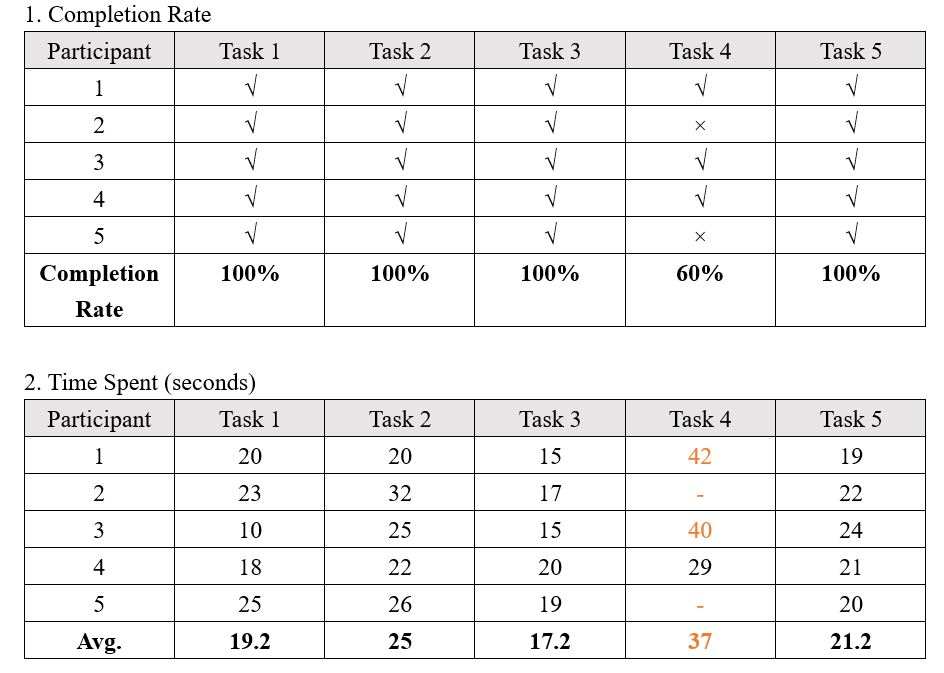
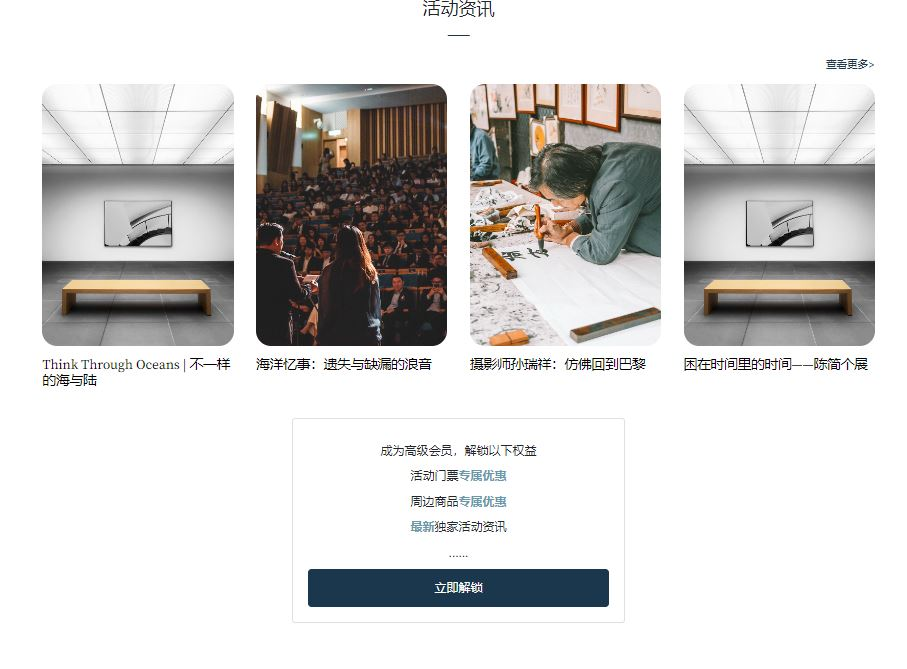

Usability test
Five tasks were designed to test the ease of use in gaining information about cultural events and joining the membership:1. Find the details of an exhibition/lecture/workshop (randomly choose one category and ask the participant to find that category);
2. Find the related articles/reviews of a particular event;
3. Find the information about souvenirs/merchandise of a particular event;
4. Upload a review;
5. Register and log in.
Three post-test questions were also designed to obtain recommendations for improvement:
1. Please rate the overall process: 10 as very satisfied, 1 as very dissatisfied.
2. Are you willing to subscribe to premium membership of this website?
3. How do you think the website can be improved?
The results are as follows:

Generally, the test went well. Participants were happy to try out the high-fidelity prototype and rate higher in terms of satisfaction compared with the first round of test. Yet, it was found that most of participants spent a lot of time or failed to find the entrance to upload reviews/articles. This problem should be addressed in the next version.
Regarding monetization, participants’ feedback aligns with the findings in previous user research (interviews). Most of them expressed that the information itself is not enough to trigger their purchase intentions. However, they were interested in the discounts and other potential benefits the premium membership would get. It seems good to keep current monetization scheme.
Regarding monetization, participants’ feedback aligns with the findings in previous user research (interviews). Most of them expressed that the information itself is not enough to trigger their purchase intentions. However, they were interested in the discounts and other potential benefits the premium membership would get. It seems good to keep current monetization scheme.
A/B test

An A/B test was designed to test whether an advertising box showing benefits of subscribing to the premium membership can trigger more registration, login, and subscription form submission.
The original version is without the advertising box, while the variant was added an advertising box with CTA button on the homepage. By clicking the CTA button, users will be directed to registration page.
This test is still running, and the results will be released later.
The original version is without the advertising box, while the variant was added an advertising box with CTA button on the homepage. By clicking the CTA button, users will be directed to registration page.
This test is still running, and the results will be released later.